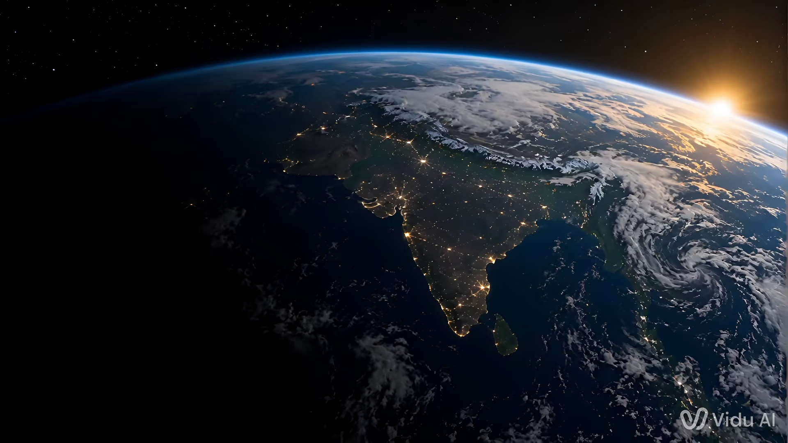
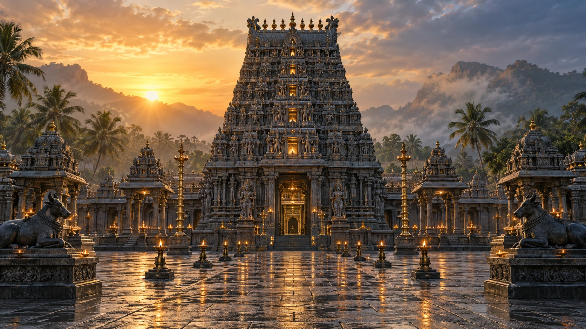
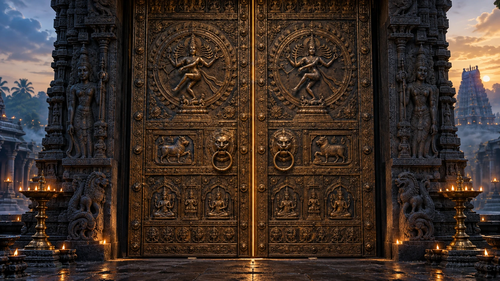
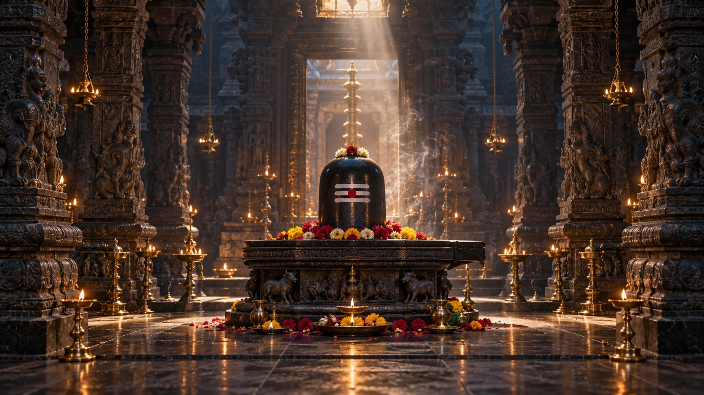
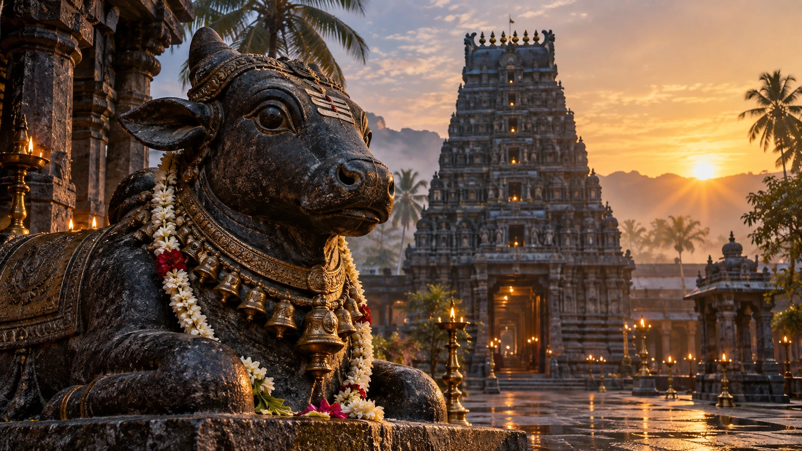

Sri Shivan Alayam / A sacred passage
ॐ
Sri Shivan Alayam
From the universe to the soul
Faith · Peace · Devotion · Eternity
Begin the journey ⟶From the universe
to your soul
Through the clouds.
Into the sacred.
A higher call awaits…
↓

“Where Divinity
Meets Humanity”──◇──

“Open your heart,
let the divine in…”

ॐ नमः शिवाय
Om Namah Shivaya──◇──
Sri Shivan Alayam
A place for every soul
──◇──Devotion · Community · Harmony
“May Lord Shiva
bless you with peace,
prosperity and happiness.”